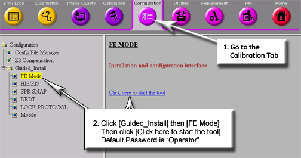
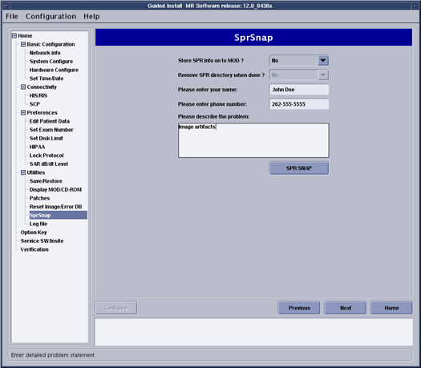
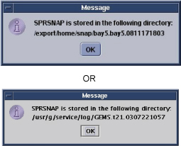

Operating Documentation
Direction 5133330-3, Rev# 14
Signa EXCITE HD 3.0T Service Methods
Module Version 3.0, Version Date 11/18/08
Operating Documentation |
Sprsnap is a utility that can be used to collect error log information, core files, and process status information after a software crash or after a significant software problem has occurred on the Signa scanner.
It's best to create an sprsnap as soon as possible after the system crashes or whatever software problem occurs. Otherwise, the data gets overwritten on reboot and subsequent scanning, erasing the evidence that engineering needs. If the system locks, bring up a C-Shell from service tools (from the background) to run the sprsnap before rebooting the system.
If the scanner has a working InSite connection, then the preferred storage media for the sprsnap is the site's hard drive. Data can be transferred to InSite relatively quickly from an MR system. Most sprsnap directories can be transferred to InSite in about an hour or less. This is easier (and quicker) than mailing a MOD disk to headquarters. Also we would have to reimburse the customer with a new MOD.
The sprsnap will go into a new directory created by the sprsnap program. It will be located in < /export/home/snap/> or </usr/g/service/log> and have the form "Joe.olc-lx.980317063/", (this is only an example) where the first half of this file is the site name, and the last half is a date stamp. (In this example an sprsnap was performed on the LX computer at the OnLine Center on March 17, 1998).
| NOTE: | Stored directory of SPRSNAP was changed to '/export/home/snap/' from '/usr/g/service/log' from HDx14.0 / HDe14.0. |
If you choose to save to MOD, the program will ask you if you want to delete the sprsnap directory after writing the MOD. You can answer either “yes” or “no” at this time. However, if you choose “no,” you will have to delete it manually later on. See below for how to delete it.
| NOTE: | The storelog program will NOT delete sprsnap for you. It will stay on the disk forever unless you manually delete it. |
Go to the Service Desktop. Start the Service Browser if it is not already running.
In the Service Browser, start the Guided Install tool as shown in Illustration 1.
Click on the [SprSnap] tab in the Guided Install window. See Illustration 2.
Provide the necessary information, as shown in Illustration 2.
Select [yes]/[no] to store Spr information onto MOD.
Enter your name.
Enter the phone number.
Enter a description of the problem.
Click on [SPRSNAP].
A pop-up message like that shown in Illustration 3 will appear showing the directory your SPRSNAP data was stored in. It may take a few minutes for this window to appear.
Click [OK].
Illustration 1: Service Desktop Manager window

Illustration 2: Guided Install window

Illustration 3: SPRSnap Directory Message

| NOTE: | Stored directory of SPRSNAP was changed to '/export/home/snap/' from '/usr/g/service/log' from HDx14.0 / HDe14.0. |
To transfer the sprsnap to InSite, you need to "tar" the sprsnap directory to a file, compress it, and then use the ftp tool to transfer it. From the '/export/home/snap/' directory or '/usr/g/service/log' directory, type the following (and note that it's just an example):
tar -cvf snapfile Joe.olc-lx.9803170638 and press <Enter>
You can select any file name instead of snapfile, but this makes it easily recognizable. Now the entire contents of the sprsnap directory are also in the file <snapfile>. It can grow to be a huge file (from 5 to 60 MB), so compress it before transferring it by entering this command:
<compress snapfile> and press <Enter>
The new file name will be “snapfile.Z”
Finally, transfer the file to InSite using the ftp tool.
The sprsnap procedure can also be used to clean up a system that may have a number of core files or other error logs (for example, kernel faults) cluttering up the /usr partition.
Create a snap using the <sprsnap> command and note the name of the directory created during the script execution. Next, use the remove <rm> command with the recursive -r and force -f options on the directory to delete the snap and its contents. Finish with a check of the space left remaining on the partitions with a df command.
First, locate the sprsnap directory in /usr/g/service/log. (Note that this is only an example) using this command:
cd /export/home/snap/<Enter>
or
cd /usr/g/service/log<Enter>
| NOTE: | Stored directory of SPRSNAP was changed to '/export/home/snap/' from '/usr/g/service/log' from HDx14.0 / HDe14.0. |
To display the files in the directory, typels and press <Enter>.
Below is sample output:
IMS.state.log geofile.out.old rdbm_log.out.old
Joe.olc-lx.9803170808/ gesys_olc-lx.log review.out
TIR.log grxfile.out review.out.old
TIR.log.old ifcc.out satfile.out
TriggerList ifcc.out.old saveINFO.log
atp_svat.trace psc.log scn.out
diskfull.log psc.log.old scn.out.old
geofile.out rdbm_log.out tds.log
See the example above. You can recognize the sprsnap directory by the combination site name and date stamp as part of its directory name. It also has a "/" at the end, indicating that it is a directory. To make sure, you could go into that directory and list its contents.
To delete the directory, you must be root user. Enter the following command from the upper-level directory ”/usr/g/service/log”:
rm -r -f<Enter>
A sample command might be:: rm -r -f Joe.olc-lx.9803170808
”-r” deletes the sprsnap directory recursively (first it deletes all contents, and then the directory itself), and “-f” forces all files to be deleted without asking permission. If you leave off the “-f”, you'll have to type “y” to give permission to delete each file, which will take some time.
Also deleted the “tar'd” file also, “snapfile” or “snapfile.Z”, if compressed. Delete it like any other file. For example:
rm snapfile
| NOTE: | Be careful deleting the sprsnap directory. Don't use any wildcards or you may regret it later when you find you've deleted the wrong thing(s). Each sprsnap will have its own directory in /usr/g/service/log. |
Below is a sample of what goes into an sprsnap. Note that this is an example only.
insite# ls Joe.olc-lx.9803170638/
AUTHOR mr.closure.MrpApps#
HEADER_POOL* mr.closure.MrpResSrv#
IMS.state.log mr.closure.PostSdC#
MR.Date.out mr.closure.driverSupport62#
MR.Hostname.out mr.closure.install
MR.printenv.out mr.closure.os_cd
MR.whatRev.out mr.swrev*
SPR_DESCRIPTION oSYSLOG
SPRsnapErrLog ps.info
SYSLOG psc.log
TAPEREV* psc.log.old
TIR.log rdbm_log.out
TIR.log.old rdbm_log.out.old
TriggerList review.out
atp_svat.trace review.out.old
config/ rpc.info
core.mrt_rfmgr.17Mar002615 satfile.out
core.scn.04Mar092915 saveINFO.log
core.scn.09Mar112338 scn.out
crashdump/ scn.out.old
df.info sdc.info/
diskfull.log sdcStartupLog.649
fstab state/
geofile.out swap.info
geofile.out.old system.info
gesys_olc-lx.log tds.log
grxfile.out where.mrt_rfmgr.17Mar002615
hosts where.scn.04Mar092915
ifcc.out where.scn.09Mar112338
ifcc.out.old xdm-errors
messages
config:
CoilConfig.cfg gasm1.cfg
CoilConfig.cfg.0.5T gasm2.cfg
CoilConfig.cfg.1.0T gdt_tolerances.cfg
CoilConfig.cfg.1.5T gip_signals.cfg
CoilConfig.vf goofy
CoilConfig.vf.0.5T install.cfg
CoilConfig.vf.1.0T ipg_stage*
CoilConfig.vf.1.5T ipg_stage.qtune*
DateTime.cfg lvshim.cfg*
GradientConfig.cfg mr_gshim_config
GradientConfig.cfg.120.ECHOSPEED netinfo.cfg.old
GradientConfig.cfg.120.ECHOSPEED_SGD pages
GradientConfig.cfg.20.HORIZON palette.cfg
GradientConfig.cfg.20.HORIZON_SGD prescan_config.cfg
GradientConfig.cfg.77.HISPEED purgeFileList
GradientConfig.cfg.77.HISPEED_SGD scan.cfg*
GradientConfig.vf scan.vf*
Host.cfg secureSystem.cfg
Host.cfg.old secureSystemMOD.cfg
IOConfigFileOC.cfg sgd_tolerances.cfg
MRconfig.cfg shim_max16c6.coeff
MRconfig.cfg% shim_max16c6.coils
MRconfig.cfg.0.5T shim_max18c6.coeff
MRconfig.cfg.1.0T shim_max18c6.coils
MRconfig.cfg.1.5T shim_s1c6.coeff
MRconfig.cfg.old shim_s1c6.coils
MRconfig.vf shim_s2c6.coeff
MRconfig.vf.0.5T shim_s2c6.coils
MRconfig.vf.1.0T shim_s3c6.coef
MRconfig.vf.1.5T shim_s3c6.coils
MRsrv.def shim_s4c6.coeff
MrPatProtocols.cfg shim_s4c6.coils
PageConfig.cfg shim_sxc6.coeff
Resource.cfg shim_sxc6.coils
ResourceTable.cfg shim_v6c6.coeff
ShimConfig.cfg shim_v6c6.coils
Site.cfg sprFiles.3
Suite.cfg sprFiles.6
Suite.cfg.old sprFiles.7
TPS_config sprFiles.8
TPS_config.lfc spt_nesting
TPS_config.old storelog.cfg
asm.cfg tardis_stage
checkdisk.cfg watchswap.cfg
gasm0.cfg
crashdump:
README_FIRST minfree
sdc.info:
crashlog.Z logs.tar.Z sdc.conf
state:
Images.50001.1.1 SaveExamNum rxcoil
SaveDiagExamNum SaveExamNum.old
SaveDiagExamNum.old avStateFile